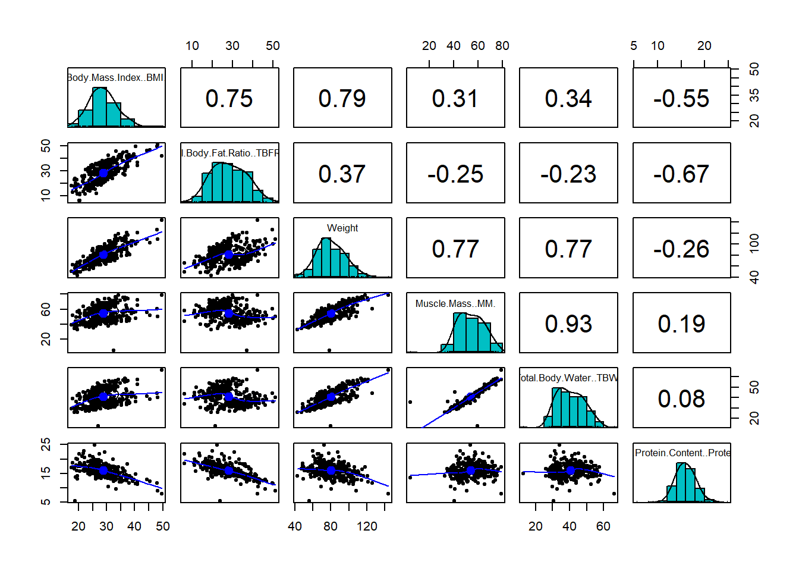
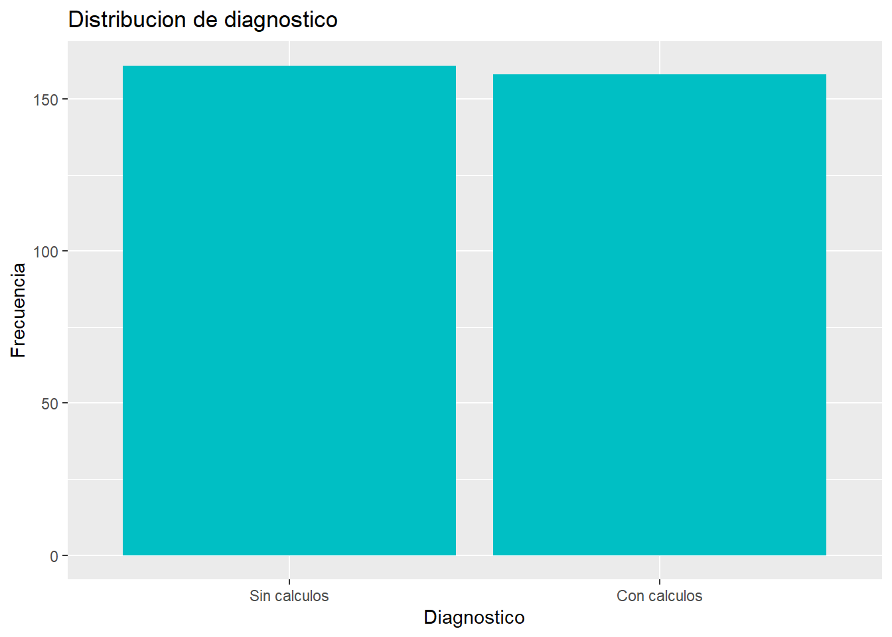
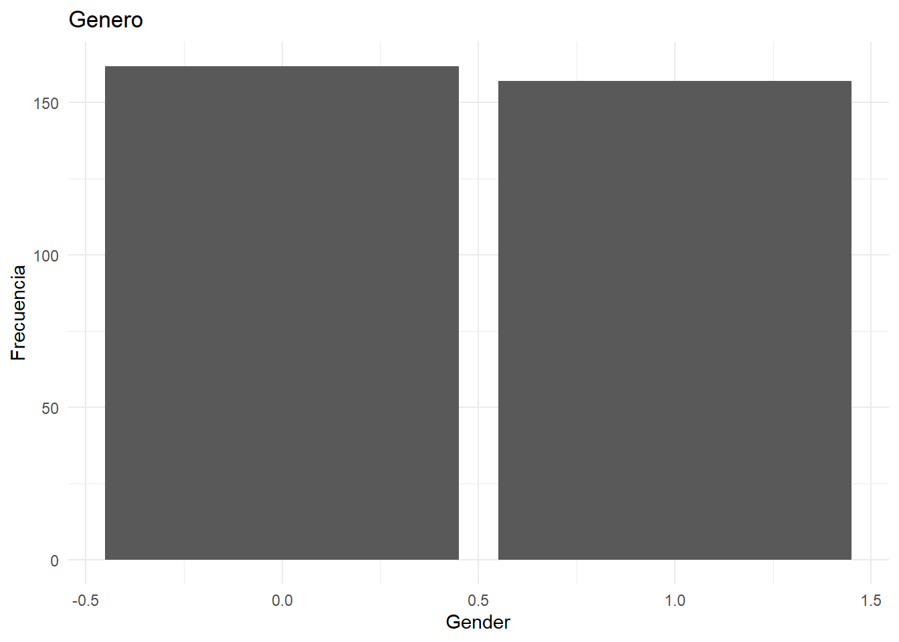
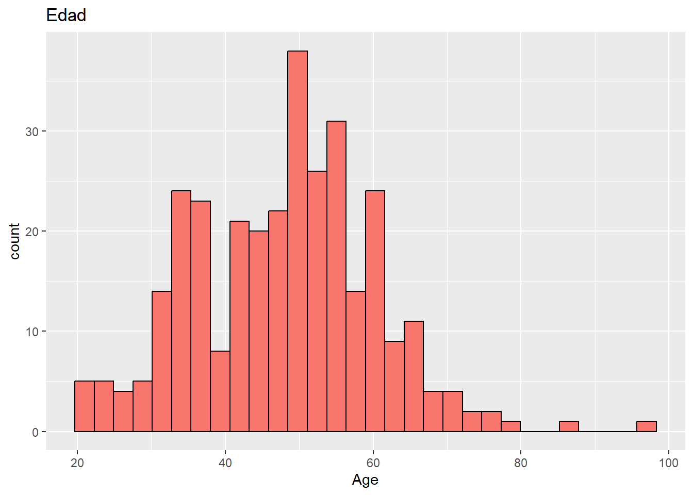
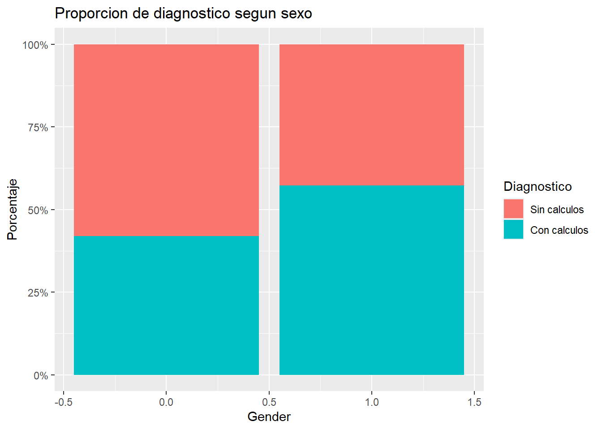
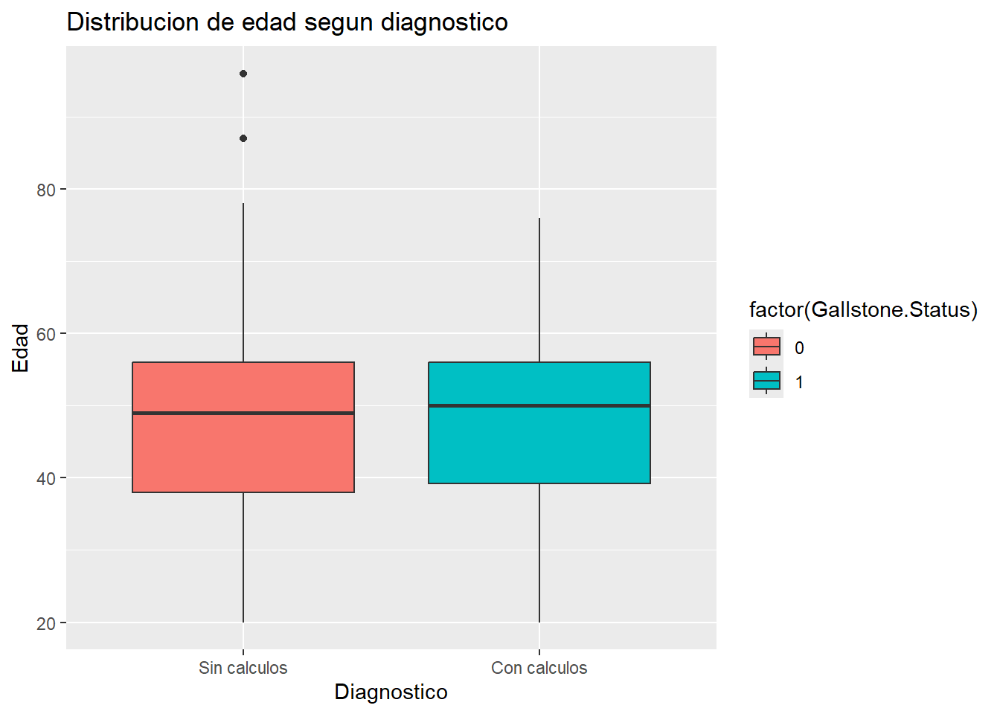

EDA - Cálculos Biliares
1 Contexto del conjunto de datos de enfermedad de cálculos biliares (Gallstone)
Este conjunto de datos corresponde a un estudio clínico llevada a cabo entre junio de 2022 y junio de 2023, con la finalidad de detectar factores asociados a la presencia de colelitiasis (enfermedad de cálculos biliares) en pacientes que asistieron al centro médico. La recolección de datos variables clínicas, demográficas, fisiológicas y bioquímicas, con el objetivo de desarrollar modelos capaces de predecir la presencia de esta patología.
El conjunto incluye 319 observaciones y 38 variables, que abarcan información como la edad, el género, el índice de masa corporal (IMC), mediciones de bioimpedancia, resultados de laboratorio (colesterol, glucosa, triglicéridos, etc.), y niveles de vitamina D, entre otros aspectos. Además se incorpora una variable binaria que señala si el paciente fue o no diagnosticado con cálculos biliares.
A continuación resaltamos las variables con mayor relevancia:
- age: Edad del paciente (en años).
- sex: Sexo del paciente (masculino/femenino).
- height, weight: Altura (cm) y peso (kg).
- BMI: Índice de masa corporal.
- fat_mass, muscle_mass: Masa grasa y masa muscular.
- visceral_fat_area: Área de grasa visceral.
- total_body_water: Porcentaje de agua corporal.
- protein: Porcentaje de proteína corporal.
- glucose: Nivel de glucosa.
- cholesterol_total, HDL, LDL, triglycerides: Perfil lipídico.
- AST, ALT, ALP: Enzimas hepáticas.
- vitamin_D: Nivel de vitamina D.
- creatinine, eGFR: Función renal.
- CRP: Proteína C-reactiva.
- comorbidity: Presencia de enfermedades adicionales.
- diagnosis: Variable objetivo (presencia de cálculos biliares: 1 = sí, 0 = no).
El objetivo principal es analizar qué variables están vinculadas con la presencia de cálculos biliares (diagnosis), con el fin de elaborar modelos predictivos que apoyen el diagnóstico clínico precoz. Este análisis exploratorio de datos permitirá entender la distribución de las variables, la identificación de posibles patrones y con ello la relación entre la condición de los pacientes y el diagnóstico de colelitiasis.
Iniciemos realizando un análisis exploratorio de datos.
2 Extracción, transformación y carga (ETL)
url <- "https://raw.githubusercontent.com/apaulag24/Metodos/refs/heads/main/Gallstone.csv"
datos <- read.csv(url, sep = ",", stringsAsFactors = TRUE)
head(datos,n=5)## Gallstone.Status Age Gender Comorbidity Coronary.Artery.Disease..CAD.
## 1 0 50 0 0 0
## 2 0 47 0 1 0
## 3 0 61 0 0 0
## 4 0 41 0 0 0
## 5 0 42 0 0 0
## Hypothyroidism Hyperlipidemia Diabetes.Mellitus..DM. Height Weight
## 1 0 0 0 185 92.8
## 2 0 0 0 176 94.5
## 3 0 0 0 171 91.1
## 4 0 0 0 168 67.7
## 5 0 0 0 178 89.6
## Body.Mass.Index..BMI. Total.Body.Water..TBW. Extracellular.Water..ECW.
## 1 27.1 52.9 21.2
## 2 30.5 43.1 19.5
## 3 31.2 47.2 20.1
## 4 24.0 41.4 17.0
## 5 28.3 51.4 20.0
## Intracellular.Water..ICW. Extracellular.Fluid.Total.Body.Water..ECF.TBW.
## 1 31.7 40
## 2 23.6 45
## 3 27.1 43
## 4 24.4 41
## 5 31.4 39
## Total.Body.Fat.Ratio..TBFR..... Lean.Mass..LM.....
## 1 19.2 80.84
## 2 32.8 67.20
## 3 27.3 72.67
## 4 15.8 84.19
## 5 20.0 80.02
## Body.Protein.Content..Protein..... Visceral.Fat.Rating..VFR. Bone.Mass..BM.
## 1 18.88 9 3.7
## 2 16.68 15 3.2
## 3 16.35 15 3.3
## 4 16.90 6 2.9
## 5 16.81 8 3.5
## Muscle.Mass..MM. Obesity.... Total.Fat.Content..TFC. Visceral.Fat.Area..VFA.
## 1 71.4 23.4 17.8 10.6
## 2 60.3 38.8 31.0 18.4
## 3 62.9 41.7 24.9 16.2
## 4 54.1 9.0 10.7 6.5
## 5 68.2 28.6 17.9 10.4
## Visceral.Muscle.Area..VMA...Kg. Hepatic.Fat.Accumulation..HFA. Glucose
## 1 39.7 0 102
## 2 32.7 0 94
## 3 34.0 0 103
## 4 29.2 1 69
## 5 37.4 2 109
## Total.Cholesterol..TC. Low.Density.Lipoprotein..LDL.
## 1 250 175
## 2 172 108
## 3 179 124
## 4 173 73
## 5 205 154
## High.Density.Lipoprotein..HDL. Triglyceride Aspartat.Aminotransferaz..AST.
## 1 40 134 20
## 2 43 103 14
## 3 43 69 18
## 4 59 53 20
## 5 30 326 27
## Alanin.Aminotransferaz..ALT. Alkaline.Phosphatase..ALP. Creatinine
## 1 22 87 0.82
## 2 13 46 0.87
## 3 14 66 1.25
## 4 12 34 1.02
## 5 54 71 0.82
## Glomerular.Filtration.Rate..GFR. C.Reactive.Protein..CRP. Hemoglobin..HGB.
## 1 112.47 0 16.0
## 2 107.10 0 14.4
## 3 65.51 0 16.2
## 4 94.10 0 15.4
## 5 112.47 0 16.8
## Vitamin.D
## 1 33.0
## 2 25.0
## 3 30.2
## 4 35.4
## 5 40.6## [1] 319 39## [1] "Gallstone.Status"
## [2] "Age"
## [3] "Gender"
## [4] "Comorbidity"
## [5] "Coronary.Artery.Disease..CAD."
## [6] "Hypothyroidism"
## [7] "Hyperlipidemia"
## [8] "Diabetes.Mellitus..DM."
## [9] "Height"
## [10] "Weight"
## [11] "Body.Mass.Index..BMI."
## [12] "Total.Body.Water..TBW."
## [13] "Extracellular.Water..ECW."
## [14] "Intracellular.Water..ICW."
## [15] "Extracellular.Fluid.Total.Body.Water..ECF.TBW."
## [16] "Total.Body.Fat.Ratio..TBFR....."
## [17] "Lean.Mass..LM....."
## [18] "Body.Protein.Content..Protein....."
## [19] "Visceral.Fat.Rating..VFR."
## [20] "Bone.Mass..BM."
## [21] "Muscle.Mass..MM."
## [22] "Obesity...."
## [23] "Total.Fat.Content..TFC."
## [24] "Visceral.Fat.Area..VFA."
## [25] "Visceral.Muscle.Area..VMA...Kg."
## [26] "Hepatic.Fat.Accumulation..HFA."
## [27] "Glucose"
## [28] "Total.Cholesterol..TC."
## [29] "Low.Density.Lipoprotein..LDL."
## [30] "High.Density.Lipoprotein..HDL."
## [31] "Triglyceride"
## [32] "Aspartat.Aminotransferaz..AST."
## [33] "Alanin.Aminotransferaz..ALT."
## [34] "Alkaline.Phosphatase..ALP."
## [35] "Creatinine"
## [36] "Glomerular.Filtration.Rate..GFR."
## [37] "C.Reactive.Protein..CRP."
## [38] "Hemoglobin..HGB."
## [39] "Vitamin.D"## 'data.frame': 319 obs. of 39 variables:
## $ Gallstone.Status : int 0 0 0 0 0 0 0 0 0 0 ...
## $ Age : int 50 47 61 41 42 96 37 41 38 38 ...
## $ Gender : int 0 0 0 0 0 0 0 0 0 0 ...
## $ Comorbidity : int 0 1 0 0 0 0 0 0 0 0 ...
## $ Coronary.Artery.Disease..CAD. : int 0 0 0 0 0 0 0 0 0 0 ...
## $ Hypothyroidism : int 0 0 0 0 0 0 0 0 0 0 ...
## $ Hyperlipidemia : int 0 0 0 0 0 0 0 0 0 0 ...
## $ Diabetes.Mellitus..DM. : int 0 0 0 0 0 0 0 0 0 0 ...
## $ Height : int 185 176 171 168 178 155 185 176 186 171 ...
## $ Weight : num 92.8 94.5 91.1 67.7 89.6 49 67.1 114 93.7 68.6 ...
## $ Body.Mass.Index..BMI. : num 27.1 30.5 31.2 24 28.3 20.4 19.6 36.8 27.1 23.5 ...
## $ Total.Body.Water..TBW. : num 52.9 43.1 47.2 41.4 51.4 34 41.8 57.6 51.9 39.5 ...
## $ Extracellular.Water..ECW. : num 21.2 19.5 20.1 17 20 15.7 17.1 23.5 20.9 16.6 ...
## $ Intracellular.Water..ICW. : num 31.7 23.6 27.1 24.4 31.4 18.3 24.7 34.1 31 22.9 ...
## $ Extracellular.Fluid.Total.Body.Water..ECF.TBW.: num 40 45 43 41 39 46 41 41 40 42 ...
## $ Total.Body.Fat.Ratio..TBFR..... : num 19.2 32.8 27.3 15.8 20 6.3 11.3 31.8 21.5 19.2 ...
## $ Lean.Mass..LM..... : num 80.8 67.2 72.7 84.2 80 ...
## $ Body.Protein.Content..Protein..... : num 18.9 16.7 16.4 16.9 16.8 ...
## $ Visceral.Fat.Rating..VFR. : int 9 15 15 6 8 12 3 16 8 6 ...
## $ Bone.Mass..BM. : num 3.7 3.2 3.3 2.9 3.5 2.4 3 3.8 3.6 2.8 ...
## $ Muscle.Mass..MM. : num 71.4 60.3 62.9 54.1 68.2 43.5 56.5 73.9 70 52.6 ...
## $ Obesity.... : num 23.4 38.8 41.7 9 28.6 7.4 10.9 67.4 23.1 6.7 ...
## $ Total.Fat.Content..TFC. : num 17.8 31 24.9 10.7 17.9 3.1 7.6 36.3 20.1 13.2 ...
## $ Visceral.Fat.Area..VFA. : num 10.6 18.4 16.2 6.5 10.4 0.9 4.6 23.7 12.7 8.2 ...
## $ Visceral.Muscle.Area..VMA...Kg. : num 39.7 32.7 34 29.2 37.4 25.9 31.4 37.5 37.8 28.8 ...
## $ Hepatic.Fat.Accumulation..HFA. : int 0 0 0 1 2 0 0 3 2 0 ...
## $ Glucose : num 102 94 103 69 109 74 94 125 93 93 ...
## $ Total.Cholesterol..TC. : num 250 172 179 173 205 133 166 246 290 239 ...
## $ Low.Density.Lipoprotein..LDL. : num 175 108 124 73 154 ...
## $ High.Density.Lipoprotein..HDL. : num 40 43 43 59 30 30 40 34 33 43 ...
## $ Triglyceride : num 134 103 69 53 326 65 60 464 679 129 ...
## $ Aspartat.Aminotransferaz..AST. : num 20 14 18 20 27 13 15 26 68 19 ...
## $ Alanin.Aminotransferaz..ALT. : num 22 13 14 12 54 13 14 28 102 34 ...
## $ Alkaline.Phosphatase..ALP. : num 87 46 66 34 71 60 72 69 70 75 ...
## $ Creatinine : num 0.82 0.87 1.25 1.02 0.82 1.46 0.77 1.3 0.91 0.91 ...
## $ Glomerular.Filtration.Rate..GFR. : num 112.5 107.1 65.5 94.1 112.5 ...
## $ C.Reactive.Protein..CRP. : num 0 0 0 0 0 0 0 0.11 1.57 0 ...
## $ Hemoglobin..HGB. : num 16 14.4 16.2 15.4 16.8 11 13.8 16.5 16.5 16.6 ...
## $ Vitamin.D : num 33 25 30.2 35.4 40.6 45.8 20 24.5 22.7 15.6 ...Notamos que los datos fueron cargados correctamente.
- Considerando que hay variables que se derivan de otras primarias, para facilitar el análisis exploratorio y evitar redundancias o ruido en el modelo, se eliminarán las variables que presenten correlación numérica positiva mayor de 0.85.*
3 Análisis de correlación de variables numéricas
# Filtrado de variables numéricas
datos_num <- datos[sapply(datos, is.numeric)]
datos_num <- na.omit(datos_num)
# Subconjunto para análisis de correlación
subconjunto <- datos_num[, c("Body.Mass.Index..BMI.",
"Total.Body.Fat.Ratio..TBFR.....",
"Weight",
"Muscle.Mass..MM.",
"Total.Body.Water..TBW.",
"Body.Protein.Content..Protein.....")]
# Visualización de correlaciones
pairs.panels(subconjunto,
method = "pearson",
hist.col = "#00BFC4",
density = TRUE,
ellipses = TRUE)
# Matriz de correlación completa
cor_matrix <- cor(datos_num)
# Buscar correlaciones fuertes (r > 0.85, excluyendo la diagonal)
high_cor <- which(abs(cor_matrix) > 0.85 & abs(cor_matrix) < 1, arr.ind = TRUE)
cat("Pares de variables con correlación alta (r > 0.85):\n\n")## Pares de variables con correlación alta (r > 0.85):for (i in seq_len(nrow(high_cor))) {
var1 <- rownames(cor_matrix)[high_cor[i, 1]]
var2 <- colnames(cor_matrix)[high_cor[i, 2]]
r <- round(cor_matrix[var1, var2], 2)
cat(paste0("- ", var1, " vs ", var2, ": r = ", r, "\n"))
}## - Visceral.Fat.Area..VFA. vs Weight: r = 0.88
## - Total.Fat.Content..TFC. vs Body.Mass.Index..BMI.: r = 0.9
## - Extracellular.Water..ECW. vs Total.Body.Water..TBW.: r = 0.9
## - Muscle.Mass..MM. vs Total.Body.Water..TBW.: r = 0.93
## - Total.Body.Water..TBW. vs Extracellular.Water..ECW.: r = 0.9
## - Muscle.Mass..MM. vs Extracellular.Water..ECW.: r = 0.87
## - Muscle.Mass..MM. vs Intracellular.Water..ICW.: r = 0.9
## - Lean.Mass..LM..... vs Total.Body.Fat.Ratio..TBFR.....: r = -0.99
## - Total.Fat.Content..TFC. vs Total.Body.Fat.Ratio..TBFR.....: r = 0.87
## - Total.Body.Fat.Ratio..TBFR..... vs Lean.Mass..LM.....: r = -0.99
## - Total.Fat.Content..TFC. vs Lean.Mass..LM.....: r = -0.86
## - Total.Body.Water..TBW. vs Muscle.Mass..MM.: r = 0.93
## - Extracellular.Water..ECW. vs Muscle.Mass..MM.: r = 0.87
## - Intracellular.Water..ICW. vs Muscle.Mass..MM.: r = 0.9
## - Visceral.Muscle.Area..VMA...Kg. vs Muscle.Mass..MM.: r = 0.86
## - Body.Mass.Index..BMI. vs Total.Fat.Content..TFC.: r = 0.9
## - Total.Body.Fat.Ratio..TBFR..... vs Total.Fat.Content..TFC.: r = 0.87
## - Lean.Mass..LM..... vs Total.Fat.Content..TFC.: r = -0.86
## - Visceral.Fat.Area..VFA. vs Total.Fat.Content..TFC.: r = 0.87
## - Weight vs Visceral.Fat.Area..VFA.: r = 0.88
## - Total.Fat.Content..TFC. vs Visceral.Fat.Area..VFA.: r = 0.87
## - Muscle.Mass..MM. vs Visceral.Muscle.Area..VMA...Kg.: r = 0.86
## - Low.Density.Lipoprotein..LDL. vs Total.Cholesterol..TC.: r = 0.87
## - Total.Cholesterol..TC. vs Low.Density.Lipoprotein..LDL.: r = 0.87
## - Alanin.Aminotransferaz..ALT. vs Aspartat.Aminotransferaz..AST.: r = 0.85
## - Aspartat.Aminotransferaz..AST. vs Alanin.Aminotransferaz..ALT.: r = 0.85A partir de las correlaciones encontradas, recomendamos eliminar algunas variables:
Muscle.Mass..MM. y Total.Body.Fat.Ratio..TBFR….. presentan alta colinealidad con otras variables.
Weight y Total.Body.Water..TBW. también se correlacionan fuerte con otras.
# Eliminación de variables redundantes
df <- datos %>%
select(-Muscle.Mass..MM.,
-Total.Body.Fat.Ratio..TBFR.....)## < table of extent 0 >## numeric(0)# Gráfico de barras
ggplot(df, aes(x = factor(Gallstone.Status, labels = c("Sin calculos", "Con calculos")))) +
geom_bar(fill = "#00BFC4") +
labs(x = "Diagnostico", y = "Frecuencia", title = "Distribucion de diagnostico")
##
## 0 1
## 162 157##
## 0 1
## 0.507837 0.492163# Gráfico de barras para sexo
ggplot(df, aes(x = Gender, fill = Gender)) +
geom_bar() +
labs(title = "Genero", y = "Frecuencia") +
theme_minimal()## Warning: The following aesthetics were dropped during statistical transformation: fill.
## ℹ This can happen when ggplot fails to infer the correct grouping structure in
## the data.
## ℹ Did you forget to specify a `group` aesthetic or to convert a numerical
## variable into a factor?
| Name | df |
| Number of rows | 319 |
| Number of columns | 37 |
| _______________________ | |
| Column type frequency: | |
| numeric | 37 |
| ________________________ | |
| Group variables | None |
Variable type: numeric
| skim_variable | n_missing | complete_rate | mean | sd | p0 | p25 | p50 | p75 | p100 | hist |
|---|---|---|---|---|---|---|---|---|---|---|
| Gallstone.Status | 0 | 1 | 0.50 | 0.50 | 0.00 | 0.00 | 0.00 | 1.00 | 1.00 | ▇▁▁▁▇ |
| Age | 0 | 1 | 48.07 | 12.11 | 20.00 | 38.50 | 49.00 | 56.00 | 96.00 | ▃▇▇▁▁ |
| Gender | 0 | 1 | 0.49 | 0.50 | 0.00 | 0.00 | 0.00 | 1.00 | 1.00 | ▇▁▁▁▇ |
| Comorbidity | 0 | 1 | 0.34 | 0.52 | 0.00 | 0.00 | 0.00 | 1.00 | 3.00 | ▇▃▁▁▁ |
| Coronary.Artery.Disease..CAD. | 0 | 1 | 0.04 | 0.19 | 0.00 | 0.00 | 0.00 | 0.00 | 1.00 | ▇▁▁▁▁ |
| Hypothyroidism | 0 | 1 | 0.03 | 0.17 | 0.00 | 0.00 | 0.00 | 0.00 | 1.00 | ▇▁▁▁▁ |
| Hyperlipidemia | 0 | 1 | 0.03 | 0.16 | 0.00 | 0.00 | 0.00 | 0.00 | 1.00 | ▇▁▁▁▁ |
| Diabetes.Mellitus..DM. | 0 | 1 | 0.13 | 0.34 | 0.00 | 0.00 | 0.00 | 0.00 | 1.00 | ▇▁▁▁▁ |
| Height | 0 | 1 | 167.16 | 10.05 | 145.00 | 159.50 | 168.00 | 175.00 | 191.00 | ▃▇▇▇▂ |
| Weight | 0 | 1 | 80.56 | 15.71 | 42.90 | 69.60 | 78.80 | 91.25 | 143.50 | ▂▇▅▁▁ |
| Body.Mass.Index..BMI. | 0 | 1 | 28.88 | 5.31 | 17.40 | 25.25 | 28.30 | 31.85 | 49.70 | ▂▇▅▁▁ |
| Total.Body.Water..TBW. | 0 | 1 | 40.59 | 7.93 | 13.00 | 34.20 | 39.80 | 47.00 | 66.20 | ▁▅▇▆▁ |
| Extracellular.Water..ECW. | 0 | 1 | 17.07 | 3.16 | 9.00 | 14.80 | 17.10 | 19.40 | 27.80 | ▂▆▇▃▁ |
| Intracellular.Water..ICW. | 0 | 1 | 23.63 | 5.35 | 13.80 | 19.30 | 23.00 | 27.55 | 57.10 | ▇▇▁▁▁ |
| Extracellular.Fluid.Total.Body.Water..ECF.TBW. | 0 | 1 | 42.21 | 3.24 | 29.23 | 40.08 | 42.00 | 44.00 | 52.00 | ▁▁▇▇▁ |
| Lean.Mass..LM….. | 0 | 1 | 71.64 | 8.44 | 48.99 | 65.17 | 72.11 | 77.85 | 93.67 | ▂▆▇▇▁ |
| Body.Protein.Content..Protein….. | 0 | 1 | 15.94 | 2.33 | 5.56 | 14.46 | 15.87 | 17.43 | 24.81 | ▁▁▇▃▁ |
| Visceral.Fat.Rating..VFR. | 0 | 1 | 9.08 | 4.33 | 1.00 | 6.00 | 9.00 | 12.00 | 31.00 | ▆▇▂▁▁ |
| Bone.Mass..BM. | 0 | 1 | 2.80 | 0.51 | 1.40 | 2.40 | 2.80 | 3.20 | 4.00 | ▁▇▇▇▃ |
| Obesity…. | 0 | 1 | 35.85 | 109.80 | 0.40 | 13.90 | 25.60 | 41.75 | 1954.00 | ▇▁▁▁▁ |
| Total.Fat.Content..TFC. | 0 | 1 | 23.49 | 9.61 | 3.10 | 17.00 | 22.60 | 28.55 | 62.50 | ▃▇▅▁▁ |
| Visceral.Fat.Area..VFA. | 0 | 1 | 12.17 | 5.26 | 0.90 | 8.57 | 11.59 | 15.10 | 41.00 | ▃▇▂▁▁ |
| Visceral.Muscle.Area..VMA…Kg. | 0 | 1 | 30.40 | 4.46 | 18.90 | 27.25 | 30.41 | 33.80 | 41.10 | ▁▅▇▆▂ |
| Hepatic.Fat.Accumulation..HFA. | 0 | 1 | 1.15 | 1.06 | 0.00 | 0.00 | 1.00 | 2.00 | 4.00 | ▇▂▇▂▁ |
| Glucose | 0 | 1 | 108.69 | 44.85 | 69.00 | 92.00 | 98.00 | 109.00 | 575.00 | ▇▁▁▁▁ |
| Total.Cholesterol..TC. | 0 | 1 | 203.50 | 45.76 | 60.00 | 172.00 | 198.00 | 233.00 | 360.00 | ▁▅▇▃▁ |
| Low.Density.Lipoprotein..LDL. | 0 | 1 | 126.65 | 38.54 | 11.00 | 100.50 | 122.00 | 151.00 | 293.00 | ▁▇▇▂▁ |
| High.Density.Lipoprotein..HDL. | 0 | 1 | 49.48 | 17.72 | 25.00 | 40.00 | 46.50 | 56.00 | 273.00 | ▇▁▁▁▁ |
| Triglyceride | 0 | 1 | 144.50 | 97.90 | 1.39 | 83.00 | 119.00 | 172.00 | 838.00 | ▇▂▁▁▁ |
| Aspartat.Aminotransferaz..AST. | 0 | 1 | 21.68 | 16.70 | 8.00 | 15.00 | 18.00 | 23.00 | 195.00 | ▇▁▁▁▁ |
| Alanin.Aminotransferaz..ALT. | 0 | 1 | 26.86 | 27.88 | 3.00 | 14.25 | 19.00 | 30.00 | 372.00 | ▇▁▁▁▁ |
| Alkaline.Phosphatase..ALP. | 0 | 1 | 73.11 | 24.18 | 7.00 | 58.00 | 71.00 | 86.00 | 197.00 | ▁▇▃▁▁ |
| Creatinine | 0 | 1 | 0.80 | 0.18 | 0.46 | 0.65 | 0.79 | 0.92 | 1.46 | ▆▇▆▁▁ |
| Glomerular.Filtration.Rate..GFR. | 0 | 1 | 100.82 | 16.97 | 10.60 | 94.17 | 104.00 | 110.75 | 132.00 | ▁▁▂▇▅ |
| C.Reactive.Protein..CRP. | 0 | 1 | 1.85 | 4.99 | 0.00 | 0.00 | 0.22 | 1.61 | 43.40 | ▇▁▁▁▁ |
| Hemoglobin..HGB. | 0 | 1 | 14.42 | 1.78 | 8.50 | 13.30 | 14.40 | 15.70 | 18.80 | ▁▃▇▇▂ |
| Vitamin.D | 0 | 1 | 21.40 | 9.98 | 3.50 | 13.25 | 22.00 | 28.06 | 53.10 | ▆▇▇▂▁ |
# Histograma de edad
ggplot(df, aes(x = Age)) +
geom_histogram(bins = 30, fill = "#F8766D", color = "black") +
labs(title = "Edad")
4 Análisis bivariado
###Categórica vs Categórica (sexo vs diagnosis)
##
## 0 1
## 0 94 68
## 1 67 90##
## Pearson's Chi-squared test with Yates' continuity correction
##
## data: tabla
## X-squared = 6.9132, df = 1, p-value = 0.008556# Gráfico de barras apiladas
ggplot(df, aes(x = Gender, fill = factor(Gallstone.Status, labels = c("Sin calculos", "Con calculos")))) +
geom_bar(position = "fill") +
scale_y_continuous(labels = scales::percent) +
labs(title = "Proporcion de diagnostico segun sexo", y = "Porcentaje", fill = "Diagnostico")
4.1 Numérica vs Categórica (edad vs diagnosis)
# Boxplot
ggplot(df, aes(x = factor(Gallstone.Status, labels = c("Sin calculos", "Con calculos")), y = Age, fill = factor(Gallstone.Status))) +
geom_boxplot() +
labs(title = "Distribucion de edad segun diagnostico", x = "Diagnostico", y = "Edad")
##
## Welch Two Sample t-test
##
## data: Age by Gallstone.Status
## t = -0.64831, df = 311.97, p-value = 0.5173
## alternative hypothesis: true difference in means between group 0 and group 1 is not equal to 0
## 95 percent confidence interval:
## -3.547193 1.788957
## sample estimates:
## mean in group 0 mean in group 1
## 47.63354 48.512665 Conclusiones
Se observa que el conjunto está equilibrado entre pacientes con y sin diagnóstico de cálculos.
La variable edad presenta diferencias entre los grupos, lo cual puede indicar una asociación.
Sexo también muestra variación en proporción.
Algunas variables numéricas están fuertemente correlacionadas, lo cual fue tratado con la eliminación de redundantes.